第 6 章 ① 純物質的分類：元素與化合物（6-1、6-3）9 題
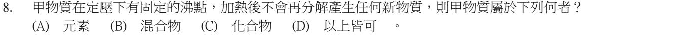
先看兩個線索：
① 有固定的沸點 → 是純物質（混合物的沸點會隨成分比例改變）→ 刪掉 (B)。
② 加熱後不會再分解產生新物質 → 不能再分解的純物質就是元素 → (A)。
(C) 化合物可以再分解成其他物質，和題目矛盾 ✗ (D) 既然只有 (A) 符合，「以上皆可」✗
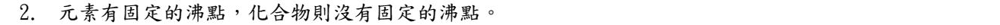
化合物也是純物質，一樣有固定的沸點（例如水在一大氣壓下 100 ℃ 沸騰）。
有固定沸點的是「純物質」（元素和化合物都算）；沒有固定沸點的是混合物。
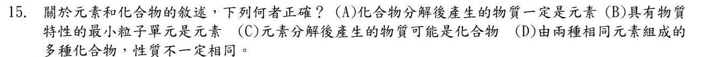
(A) 化合物分解後的產物不一定是元素，也可能是比較簡單的化合物（例如碳酸鈣分解成氧化鈣和二氧化碳）✗
(B) 具有物質特性的最小粒子是分子，不是元素 ✗
(C) 元素不能再分解，更不會分解出化合物 ✗
(D) 同樣由碳、氧組成的一氧化碳（CO）和二氧化碳（CO2），一個有毒、一個可以滅火，性質不同 ✓
▼ 南一類題（改寫）：同一個主題再練 6 題
下列關於物質分類的敘述，何者正確？
- (A) 外觀清澈透明的液體，一定是純物質
- (B) 化合物是由兩種或兩種以上的元素，以固定比例組成的純物質
- (C) 混合物一定要用化學方法才能把成分分開
- (D) 只有元素才有固定的熔點和沸點
(B) 就是化合物的定義：兩種以上元素＋固定比例 ✓
(A) 糖水、食鹽水也清澈透明，卻是混合物 ✗
(C) 混合物通常用物理方法分離（過濾、蒸發、蒸餾）✗
(D) 元素和化合物都是純物質，純物質都有固定熔點、沸點（例如水 100 ℃ 沸騰）✗
加熱小蘇打（碳酸氫鈉），會產生碳酸鈉、水和二氧化碳三種物質。下列敘述何者正確？
- (A) 小蘇打是由碳酸鈉、水、二氧化碳混合而成的混合物
- (B) 生成的三種物質都是元素
- (C) 生成的三種物質都是化合物
- (D) 生成物中只有水是化合物
碳酸鈉（Na、C、O）、水（H、O）、二氧化碳（C、O）——每一種都含兩種以上元素，全都是化合物 → (C)。
(A) 小蘇打本身是一種化合物（純物質），加熱後才變成新物質，不是本來就混在一起 ✗
(B)(D) 三種生成物都由兩種以上元素組成，沒有一個是元素 ✗
化合物分解後的產物不一定是元素，也可能是比較簡單的化合物。
水通電後分解成氫氣和氧氣，而氫氣、氧氣都無法再用化學方法分解成其他物質。根據這個實驗，下列推論何者正確？
- (A) 水是由氫氣和氧氣混合而成的混合物
- (B) 水是由氫、氧兩種元素組成的化合物
- (C) 氫氣是化合物
- (D) 水是元素
水可以再分解 → 不是元素；分解出來的氫、氧不能再分解 → 是元素。所以水是由氫、氧兩種元素組成的化合物 → (B)。
(A) 水有固定的組成和沸點，是純物質，不是氫氣和氧氣混在一起（混在一起的氫氧氣體可不是水）✗
(C) 氫氣不能再分解，是元素 ✗ (D) 水還能分解，不是元素 ✗
把物質分成甲、乙、丙、丁四類：物質 → 甲、乙兩類；甲 → 丙、丁兩類。已知鐵屬於丙、氧化鐵屬於丁、糖水屬於乙。某白色固體 X 有固定的熔點，加熱後分解成兩種新物質。若要把 X 放在最細的一層分類，應放在哪一類？
- (A) 甲
- (B) 乙
- (C) 丙
- (D) 丁
先把四類對出來：糖水是混合物 → 乙＝混合物，所以甲＝純物質；鐵是元素 → 丙＝元素；氧化鐵是化合物 → 丁＝化合物。
X 有固定熔點 → 純物質；還能分解成新物質 → 不是元素，是化合物 → 丁 (D)。
X 雖然也屬於甲（純物質），但題目要「最細的一層」，所以選丁。
下列哪一種物質無法再用一般的化學方法分解成其他物質？
- (A) 食鹽（氯化鈉）
- (B) 二氧化碳
- (C) 銅
- (D) 水
無法再分解的純物質就是元素。銅（Cu）是元素 → (C)。
(A) 氯化鈉＝鈉＋氯；(B) 二氧化碳＝碳＋氧；(D) 水＝氫＋氧。三個都是化合物，可以再分解 ✗
不鏽鋼是把鐵和鉻、鎳等金屬依照一定比例熔在一起做成的合金。就物質的組成來說，不鏽鋼屬於下列何者？
- (A) 元素
- (B) 化合物
- (C) 混合物
- (D) 純物質
合金是混合物：鐵、鉻、鎳只是熔在一起，各自保有原本的性質，比例也可以調整（所以有很多種不鏽鋼）→ (C)。
(A) 含好幾種元素，不是單一元素 ✗
(B)(D) 沒有形成新的純物質，比例可變，不是化合物、也不是純物質 ✗
「依一定比例」不等於「固定比例的化合物」——關鍵是有沒有變成新物質。
第 6 章 ② 認識元素：金屬與非金屬（6-1）17 題
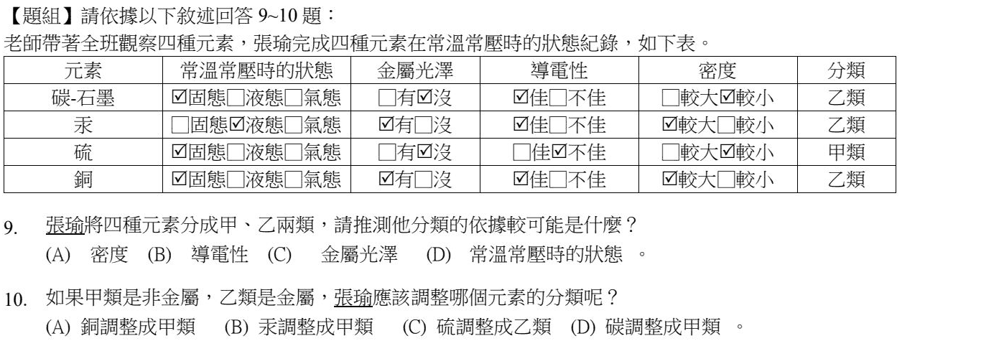
甲類只有硫，乙類是石墨、汞、銅。找一個「硫和其他三個都不一樣」的性質：
(A) 密度：硫較小，但石墨也較小 ✗
(B) 導電性：只有硫不佳，其他三個都佳 ✓
(C) 金屬光澤：硫沒有，石墨也沒有 ✗
(D) 狀態：硫是固態，石墨、銅也是固態 ✗
金屬：汞、銅；非金屬：硫、碳（石墨）。
張瑜因為石墨會導電，把它放進了乙類（金屬）——但石墨是會導電的非金屬，要調整成甲類 → (D)。
石墨是「非金屬會導電」的例外；只靠導電性分金屬／非金屬，一定會把它分錯。
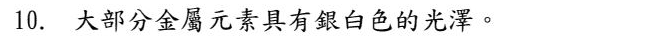
大部分金屬元素是銀白色（銀灰色）、有金屬光澤；少數例外：金是黃色、銅是紅棕色。
題目說「大部分」→ 是。
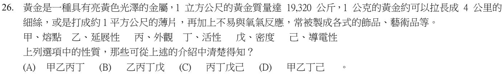
把文章逐句對到性質：
「1 立方公尺質量 19,320 公斤」→ 戊 密度；「拉長成細絲、打成薄片」→ 乙 延展性；「亮黃色光澤」→ 丙 外觀；「不易與氧氣反應」→ 丁 活性（活性小）。
熔點（甲）、導電性（己）文章沒有提到 → 乙丙丁戊 (B)。
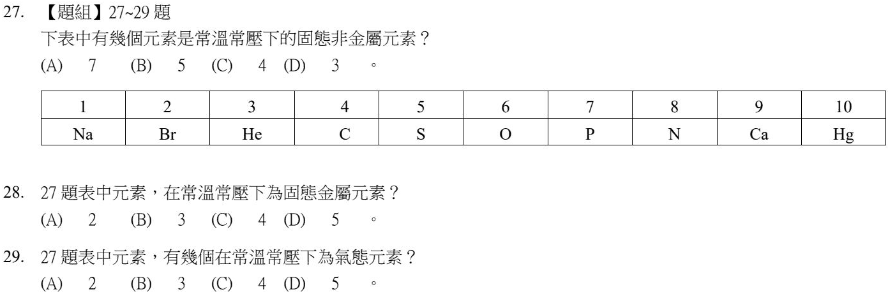
先把十個元素在常溫常壓下的狀態分好：
固態金屬：Na（鈉）、Ca（鈣）
液態：Br（溴，非金屬）、Hg（汞，金屬）
氣態：He（氦）、O（氧）、N（氮）
固態非金屬：C（碳）、S（硫）、P（磷）
固態非金屬共 3 個 → (D)。
固態金屬：Na、Ca，共 2 個 → (A)。
Hg 是金屬但常溫是液態，不能算。
氣態元素：He、O、N，共 3 個 → (B)。
Br（溴）是液態，常被誤算成氣體。記：常溫液態元素只有溴、汞。
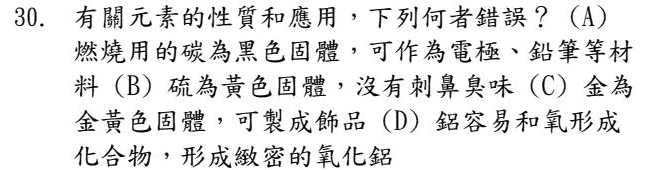
燃燒用的碳是木炭、煤這類的碳；做電極、鉛筆芯用的是另一種碳——石墨（可導電、質地軟）。把燃燒用的碳說成可以做電極、鉛筆 → (A) 錯。
(B) 硫是黃色固體，本身幾乎沒有氣味（刺鼻味是燃燒後產生的二氧化硫）✓
(C) 金是金黃色固體，常做飾品 ✓
(D) 鋁表面會和氧形成一層緻密的氧化鋁，保護裡面不再被氧化 ✓
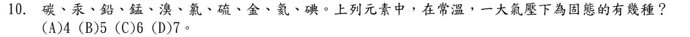
逐一判斷常溫常壓下的狀態：
固態：碳、鉛、錳、硫、金、碘（6 種）
液態：汞、溴
氣態：氯、氦
→ 6 種 (C)。
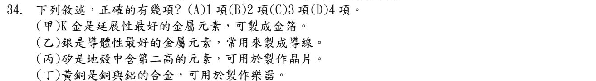
(甲) K 金是金和其他金屬的合金，不是「元素」；延展性最好的是純金 ✗
(乙) 銀的導電性最好沒錯，但銀太貴，導線多半用銅 ✗
(丙) 地殼中含量：氧第一、矽第二；矽可以做晶片 ✓
(丁) 黃銅是銅和鋅的合金，不是鋁 ✗
正確只有 1 項 → (A)。
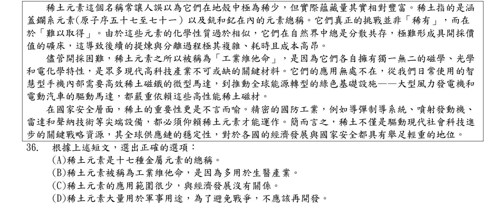
文章說稀土是「鑭系元素（原子序 57～71）以及鈧和釔」：57 到 71 共 15 種，再加 2 種 ＝ 17 種，而且都是金屬 → (A)。
(B) 文章說被稱為工業維他命，是因為有獨特的磁學、光學、電化學特性，用在高科技產業，沒有說生醫 ✗
(C) 文章說應用無處不在、對經濟發展舉足輕重 ✗
(D) 文章沒有主張不應開發 ✗
閱讀題：每個選項都要回到文章找原句對照。從 57 數到 71 是 71 − 57 ＋ 1 ＝ 15 個，別算成 14。
▼ 南一類題（改寫）：同一個主題再練 6 題
有關非金屬元素在常溫常壓下的顏色和狀態，下列何者錯誤？
- (A) 碘：紫黑色固體
- (B) 溴：黃綠色氣體
- (C) 硫：黃色固體
- (D) 氯：黃綠色氣體
溴是暗紅色的液體（也是唯一常溫下是液體的非金屬元素）→ (B) 錯。
(A) 碘紫黑色固體 ✓ (C) 硫黃色固體 ✓ (D) 氯黃綠色氣體 ✓
記法：常溫液態元素只有兩個——金屬的汞、非金屬的溴（兩個字都有「水」字旁）。
下列元素的性質與用途配對，何者錯誤？
- (A) 銅：導電性佳，用來做電線
- (B) 鎢：熔點很高，用來做燈泡的燈絲
- (C) 鋁：質輕、導熱好，用來做鍋具
- (D) 鉛：黑色、可以導電，用來做鉛筆芯
鉛筆芯的主要成分是石墨（碳），不是鉛 → (D) 錯。鉛筆的「鉛」只是古時候留下來的名稱。
(A) 銅導電好又比銀便宜，電線用銅 ✓
(B) 鎢是熔點最高的金屬 ✓
(C) 鋁輕、導熱快 ✓
做「元素性質的探索」實驗時，某未知元素：黑色、沒有金屬光澤、可以導電、用鐵鎚敲會碎裂。它最可能是下列何者？
- (A) 鋁
- (B) 石墨（碳）
- (C) 硫
- (D) 銅
敲了會碎、沒有金屬光澤 → 非金屬；但它又能導電、還是黑色 → 唯一符合的是石墨 (B)。
(A)(D) 鋁、銅是金屬，有光澤、敲了只會變形 ✗
(C) 硫是黃色、不導電 ✗
石墨是「非金屬會導電」的著名例外，用導電性分金屬／非金屬時要特別小心。
下列關於金屬元素與非金屬元素通性的敘述，何者正確？
- (A) 常溫常壓下，金屬元素都是固體
- (B) 金屬大多具有延展性，非金屬大多敲擊後容易碎裂
- (C) 非金屬元素都不能導電
- (D) 金屬元素都是銀白色
(B) 延展性是金屬的通性；非金屬固體（硫、碘、碳）多半脆、一敲就碎 ✓
(A) 汞是液態金屬 ✗
(C) 石墨可以導電 ✗
(D) 金是黃色、銅是紅棕色，不是全都銀白 ✗
氫、氮、氧、氯這四種元素的中文名稱，都有「气」部首。這個部首告訴我們它們有什麼共同點？
- (A) 都是金屬元素
- (B) 常溫常壓下都是氣體
- (C) 都可以燃燒
- (D) 都是鈍氣
元素中文命名的部首代表常溫常壓下的狀態：「气」＝氣體 → (B)。
(A) 四個都是非金屬 ✗ (C) 氮、氯不能燃燒 ✗ (D) 鈍氣是氦、氖、氬那一族，這四個都不是 ✗
其他部首：「金」＝固態金屬（汞例外，用「水」）；「石」＝固態非金屬；「氵」＝液態非金屬（溴）。
下列日常物品中，哪一個的主要成分是單一種元素？
- (A) 食鹽
- (B) 24K 純金項鍊
- (C) 空氣
- (D) 水
24K 金的含金量約 99.9％，可以看成純的金（Au）元素 → (B)。
(A) 食鹽是氯化鈉，化合物 ✗
(C) 空氣是氮氣、氧氣等的混合物 ✗
(D) 水是化合物 ✗
對照：18K 金只含 75％ 的金，是合金（混合物）。
第 6 章 ③ 元素符號與元素週期表（6-1、6-2）16 題
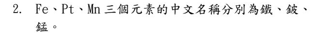
Fe 鐵 ✓、Mn 錳 ✓，但 Pt 是鉑（白金），不是鈹（鈹是 Be）→ 否。
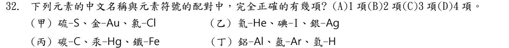
逐組核對：
(甲) 硫 S、金 Au、氯 Cl ✓
(乙) 氦 He、碘 I、銀 Ag ✓
(丙) 碳 C、汞 Hg、鐵 Fe ✓
(丁) 鋁 Al、氬 Ar、氫 H ✓
四組全部正確 → 4 項 (D)。
這種題目要一個一個看清楚；常被調包的是 Ag／Au、Mg／Mn、Na／Ne。
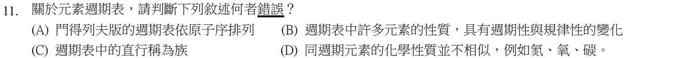
門得列夫的週期表是依原子量排列；現在的週期表才依原子序排列（莫斯利）→ (A) 錯。
(B) 元素性質隨原子序有週期性變化 ✓ (C) 直行稱為族、橫列稱為週期 ✓ (D) 同一週期的元素性質不相似（同一族才相似）✓
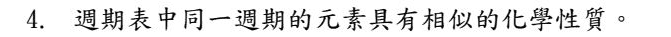
化學性質相似的是同一族（直行），不是同一週期（橫列）→ 否。
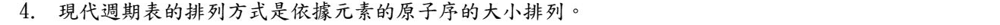
現代週期表依原子序（質子數）由小到大排列 → 是。
對照：門得列夫最早的週期表是依原子量排列。
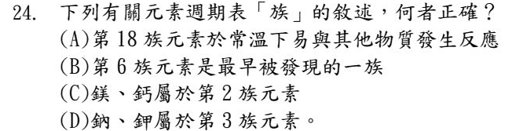
(A) 第 18 族是鈍氣，常溫下很難和其他物質反應 ✗
(B) 沒有「第 6 族最早被發現」這種說法 ✗
(C) 鎂、鈣屬於第 2 族（鹼土金屬）✓
(D) 鈉、鉀屬於第 1 族（鹼金屬）✗
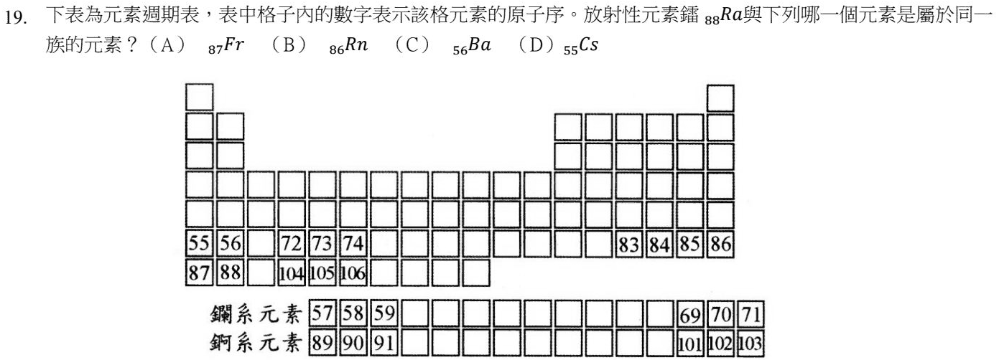
在表中找到 88（鐳），它在第 2 行；同一直行往上是 56 → 56Ba（鋇）→ (C)。
(A) 87 Fr、(D) 55 Cs 在第 1 族；(B) 86 Rn 在第 18 族。它們只是原子序和 88 很接近，不在同一直行。
同族＝同一直行；原子序相鄰的，通常是同一週期。
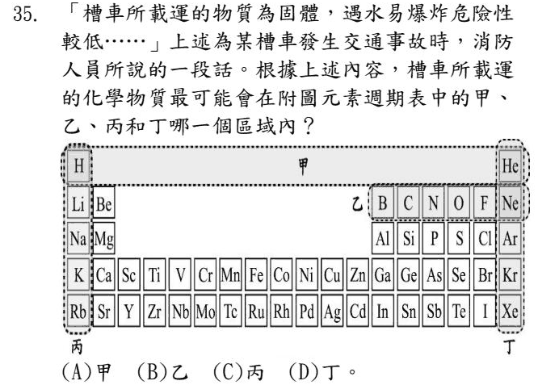
題目的線索：載運的是固體，而且遇水不容易爆炸。逐區排除：
丙（第 1 族）：鋰、鈉、鉀等鹼金屬遇水會劇烈反應甚至爆炸 ✗
丁（第 18 族）：鈍氣，常溫是氣體 ✗
乙（硼～氖）：氮、氧、氟、氖都是氣體，大多不是固體 ✗
剩下 (A) 甲。
⚠️ 補充：圖中標「甲」的虛線框只框住第一列（只有氫、氦，都是氣體），照字面看並不符合「固體」；命題老師應該是把沒有被乙、丙、丁框到的其他區域（大部分是固態金屬，遇水反應不劇烈）當成甲。本題官方答案是 (A)，這裡照官方答案計分；如果考試遇到類似題目，請問老師這一題怎麼算。
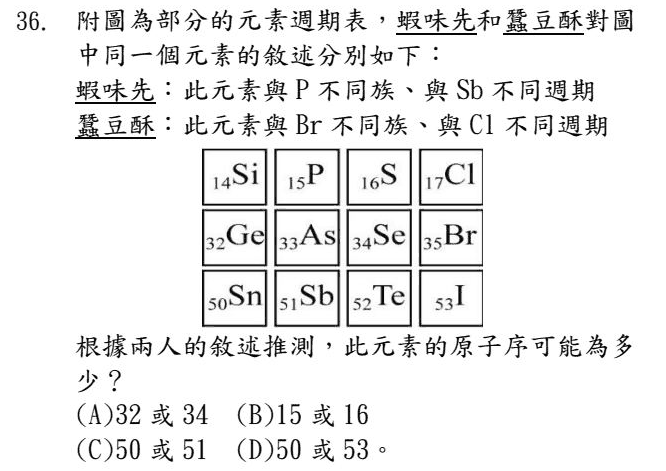
把兩個人的條件逐一套用：
蝦味先：和 P 不同族 → 刪掉 P、As、Sb；和 Sb 不同週期 → 刪掉第 5 週期的 Sn、Sb、Te、I。
蠶豆酥：和 Br 不同族 → 刪掉 Cl、Br、I；和 Cl 不同週期 → 刪掉第 3 週期的 Si、P、S、Cl。
剩下 Ge（32）、Se（34） → (A)。
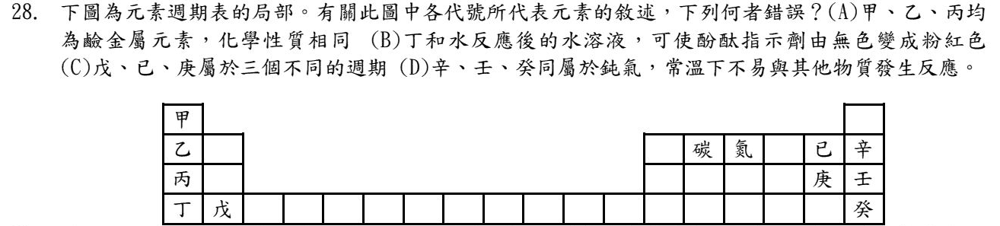
先把代號對到元素：甲＝H、乙＝Li、丙＝Na、丁＝K、戊＝Ca、己＝F、庚＝Cl、辛＝Ne、壬＝Ar、癸＝Kr。
(A) 甲是氫：雖然在第 1 族，但它是非金屬氣體，不是鹼金屬 → 錯 ✓
(B) 丁（K）和水反應生成鹼性物質，酚酞由無色變紅 ✓
(C) 戊在第 4 週期、己在第 2 週期、庚在第 3 週期，三個不同週期 ✓
(D) 辛、壬、癸在第 18 族，是鈍氣，很安定 ✓
▼ 南一類題（改寫）：同一個主題再練 6 題
關於現在使用的元素週期表，下列敘述何者錯誤？
- (A) 元素依照原子序由小到大排列
- (B) 共有 7 個週期、18 族
- (C) 同一週期（橫列）的元素，化學性質相似
- (D) 未來還可能加入新發現的元素
化學性質相似的是同一族（直行），不是同一週期 → (C) 錯。
同一週期從左到右，性質是規律地改變（從活潑金屬一路變到非金屬、鈍氣）。
(A)(B)(D) 都正確：現代週期表依原子序排；7 週期 18 族；科學家仍在合成新元素。
實驗室裡的鉀塊，為了避免它和空氣中的水氣、氧氣反應，平常應該浸在哪裡保存？
- (A) 水中
- (B) 酒精中
- (C) 礦物油中
- (D) 純氧中
鉀是鹼金屬，活性非常大，碰到水會劇烈反應、碰到空氣會很快失去光澤。礦物油（石油）不含水、也隔絕空氣 → (C)。
(A) 放水裡會立刻劇烈反應 ✗ (B) 酒精也會和鉀反應 ✗ (D) 純氧會讓它更快氧化 ✗
關於鈉和鉀的比較，下列何者錯誤？
- (A) 都屬於第 1 族的鹼金屬
- (B) 丟進水裡都會產生氣體
- (C) 和水反應後的水溶液，會使酚酞指示劑變成紅色
- (D) 鈉和水的反應比鉀和水的反應更劇烈
同一族由上往下，鹼金屬愈來愈活潑：鉀在鈉的下面 → 鉀比鈉更劇烈 → (D) 錯。
(A) ✓ (B) 會產生氫氣 ✓ (C) 生成鹼性物質，酚酞由無色變紅 ✓
下列元素名稱與元素符號的配對，哪一組全部正確？
- (A) 鎂 Mn、錳 Mg
- (B) 鈣 Ca、銅 Cu
- (C) 鈉 Ne、氖 Na
- (D) 銀 Au、金 Ag
(B) 鈣 Ca、銅 Cu 都對 ✓
(A) 剛好相反：鎂 Mg、錳 Mn ✗
(C) 剛好相反：鈉 Na、氖 Ne ✗
(D) 剛好相反：銀 Ag、金 Au ✗
這三組是最常被對調的考點：Mg／Mn、Na／Ne、Ag／Au。元素符號第一個字母大寫、第二個小寫。
鎂的原子序是 12，位於第 2 族。下列哪一個元素和鎂在同一族？
- (A) 鈉（原子序 11）
- (B) 鋁（原子序 13）
- (C) 鈣（原子序 20）
- (D) 矽（原子序 14）
第 2 族由上到下：鈹（4）、鎂（12）、鈣（20）、鍶……；每往下一格，原子序在這一段差 8 → 12 ＋ 8 ＝ 20 → (C)。
(A)(B)(D) 鈉、鋁、矽都在鎂旁邊（第 3 週期），是同一週期，不是同一族 ✗
週期表把某些元素排在同一族（同一直行），主要是因為它們哪一種性質相似？
- (A) 化學性質
- (B) 顏色
- (C) 原子量
- (D) 中子數
同一族的元素化學性質相似（例如第 1 族都很活潑、第 18 族都很安定）→ (A)。
(B) 同族顏色不一定一樣（氯黃綠色、溴暗紅色、碘紫黑色）✗
(C)(D) 同族的原子量、中子數往下愈來愈大，並不相似 ✗
第 6 章 ④ 原子概念的發展：從道耳頓到原子模型（6-3）10 題
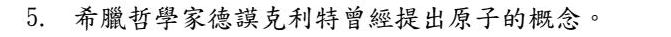
古希臘哲學家德謨克利特最早提出「物質由不可分割的微小粒子（原子）組成」的想法 → 是。
他是哲學推想；兩千多年後，道耳頓才根據實驗提出科學的原子說。
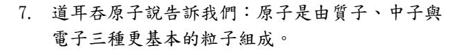
道耳頓原子說認為原子是不可再分割的最小粒子。
原子由質子、中子、電子組成，是後來湯姆森、拉塞福、查兌克陸續發現的，不是道耳頓說的 → 否。
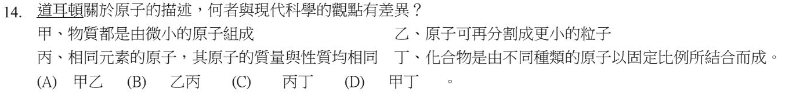
這題要比的是：哪兩個主題上，道耳頓的看法和現代科學不同。
甲 物質由原子組成：兩邊看法一樣 ✓
乙 原子能不能再分割：道耳頓說不能；現代知道原子可以分成電子、質子、中子 → 不同
丙 同元素原子質量是否都相同：道耳頓說相同；現代發現有同位素，質量可以不同 → 不同
丁 化合物由不同原子以固定比例結合：兩邊看法一樣 ✓
→ 乙丙 (B)。
注意：乙這句本身是現代的說法，題目是把它列出來比較，意思是「在這一點上道耳頓的想法和現在不同」。
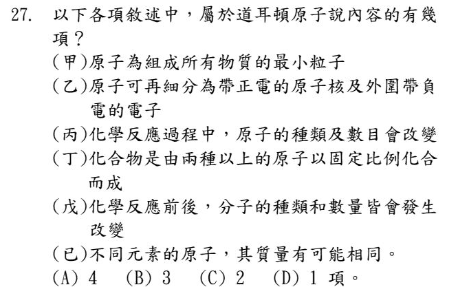
逐項對照道耳頓原子說：
(甲) 原子是組成物質的最小粒子 ✓
(乙) 原子可再分成原子核和電子 → 這是後來拉塞福的模型，原子說認為原子不可分割 ✗
(丙) 化學反應中原子的種類、數目不會改變 ✗
(丁) 化合物由兩種以上的原子以固定比例結合 ✓
(戊) 原子說講的是原子重新排列；「分子」的概念是亞佛加厥後來提出的 ✗
(己) 原子說認為不同元素的原子質量不同 ✗
屬於原子說的是甲、丁，共 2 項 → (C)。
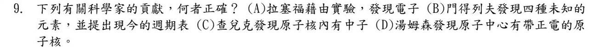
(A) 拉塞福做 α 粒子散射實驗，發現的是原子核；電子是湯姆森發現的 ✗
(B) 門得列夫依原子量排出週期表，並預測還有未發現的元素（留空格），不是他發現四種元素；現今的週期表依原子序排列 ✗
(C) 查兌克發現原子核內的中子 ✓
(D) 湯姆森發現的是電子；原子中心帶正電的原子核是拉塞福發現的 ✗
口訣：湯姆森—電子；拉塞福—原子核（質子）；查兌克—中子。
▼ 南一類題（改寫）：同一個主題再練 5 題
下列哪一項不是道耳頓原子說的內容？
- (A) 物質都是由微小的原子組成
- (B) 同一種元素的原子，質量和性質都相同
- (C) 化學反應時，舊的原子會消失，產生新的原子
- (D) 不同元素的原子，能以固定比例結合成化合物
原子說認為化學反應只是原子重新排列組合，原子不會消失、也不會產生新的原子 → (C) 不是原子說的內容。
(A)(B)(D) 都是原子說的重點 ✓
人類對原子的認識是一步一步累積的。下列四件事，依照發生的先後順序排列應為何？
甲、道耳頓提出原子說 乙、湯姆森發現電子 丙、拉塞福發現原子核 丁、查兌克發現中子
- (A) 甲 → 乙 → 丙 → 丁
- (B) 乙 → 甲 → 丙 → 丁
- (C) 甲 → 丙 → 乙 → 丁
- (D) 甲 → 乙 → 丁 → 丙
道耳頓原子說（約 1803 年）→ 湯姆森發現電子（1897 年）→ 拉塞福發現原子核（1911 年）→ 查兌克發現中子（1932 年）→ (A)。
邏輯也可以幫你排：先要有「原子」的想法，才會發現它裡面有電子；知道有原子核後，才會再找到核裡面不帶電的中子。
老師用保麗龍球做水分子模型：兩個氫原子用一樣大小的白球，氧原子用另一種比較大的紅球。這樣的做法最能呈現原子說的哪一個觀點？
- (A) 原子是最小的粒子，不可以再分割
- (B) 同一種元素的原子質量和性質相同；不同元素的原子，質量和性質不同
- (C) 化學反應只是原子重新排列
- (D) 物質都是由原子組成
同樣是氫原子 → 用一樣的球；氫和氧是不同元素 → 用不同的球。這正是「同元素原子相同、不同元素原子不同」→ (B)。
(A)(C)(D) 也是原子說的內容，但這個模型的「大小、顏色區分」沒有在表現它們。
道耳頓認為原子不能再分割。後來哪一項發現，證明原子其實還能分成更小的粒子？
- (A) 發現同素異形體
- (B) 發現原子裡面有電子
- (C) 排出元素週期表
- (D) 發現化合物有固定的組成比例
湯姆森發現原子裡面有帶負電的電子——原子裡還有更小的粒子，所以原子是可以再分的 → (B)。
(A)(C)(D) 都和「原子能不能分割」無關；(D) 甚至是支持原子說的證據。
古希臘哲學家德謨克利特也提出過「原子」的想法。和道耳頓的原子說相比，最大的差別是什麼？
- (A) 德謨克利特認為物質可以無限分割下去
- (B) 道耳頓的原子說有實驗結果（物質化合的質量比例）當根據
- (C) 德謨克利特已經知道原子裡有電子
- (D) 道耳頓認為原子還可以再分割
德謨克利特的原子是哲學上的推想；道耳頓則根據化學反應中各物質的質量比例等實驗結果提出原子說，所以被當成科學理論 → (B)。
(A) 他正是主張物質不能無限分割，最後會分到「原子」✗
(C) 電子到 19 世紀末才被發現 ✗
(D) 道耳頓認為原子不可分割 ✗
第 6 章 ⑤ 原子結構、原子序與質量數、同位素（6-3）15 題
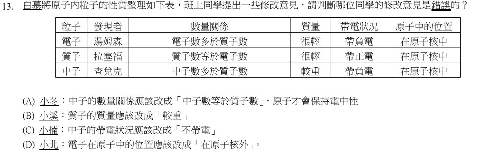
先把表格的錯誤找出來：電子、質子、中子的「數量關係」，以及中子的「帶電」、電子的「位置」都寫錯了。
(A) 小冬：原子保持電中性，靠的是質子數 ＝ 電子數；中子不帶電，中子數多少都不影響電性。而且中子數也不一定等於質子數 → 這個修改意見錯誤 ✓
(B) 質子比電子重很多（約 1836 倍），改成「較重」✓
(C) 中子不帶電 ✓
(D) 電子在原子核外 ✓
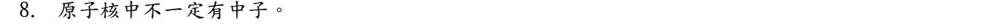
最常見的氫原子（氕），原子核裡只有 1 個質子、沒有中子 → 原子核中不一定有中子 → 是。
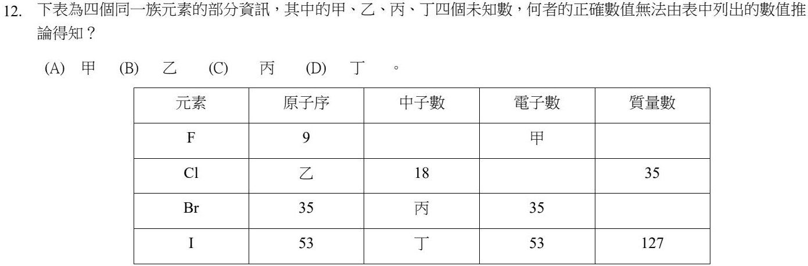
用三條關係：原子序 ＝ 質子數 ＝ 電子數；質量數 ＝ 質子數 ＋ 中子數。
甲：F 的電子數 ＝ 原子序 ＝ 9 → 推得出來
乙：Cl 原子序 ＝ 35 − 18 ＝ 17 → 推得出來
丙：Br 的中子數 ＝ 質量數 − 35，但Br 的質量數表中沒有給 → 推不出來
丁：I 的中子數 ＝ 127 − 53 ＝ 74 → 推得出來
→ (C) 丙。
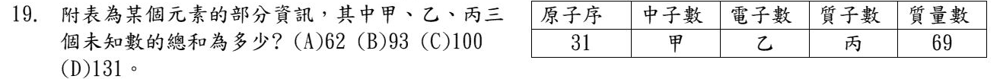
原子序 31 → 質子數 丙 ＝ 31，電子數 乙 ＝ 31；中子數 甲 ＝ 69 − 31 ＝ 38。
甲 ＋ 乙 ＋ 丙 ＝ 38 ＋ 31 ＋ 31 ＝ 100 → (C)。
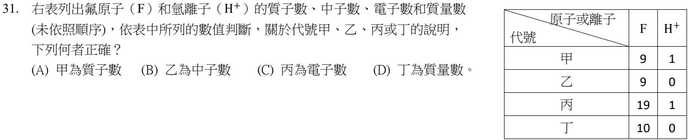
先算出兩個粒子的四個數字：
F（原子序 9、質量數 19）：質子 9、中子 10、電子 9、質量數 19
H＋（氫原子失去 1 個電子）：質子 1、中子 0、電子 0、質量數 1
對表格：甲（9, 1）＝質子數；乙（9, 0）＝電子數；丙（19, 1）＝質量數；丁（10, 0）＝中子數 → (A)。
(B) 乙是電子數。(C) 丙是質量數。(D) 丁是中子數。
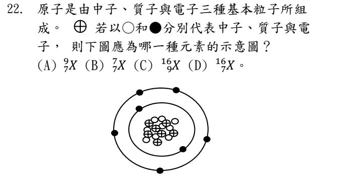
先數三種粒子（題目說 ⊕ 是質子、○ 是中子、● 是電子）：
電子 ●：內圈 2 個、外圈 5 個，共 7 個
質子 ⊕：7 個 → 原子序 7（氮）
中子 ○：9 個 → 質量數 ＝ 7 ＋ 9 ＝ 16
寫成 167X → (D)。
符號寫法：左上是質量數、左下是原子序。題目的圖很小，點圖放大後慢慢數。
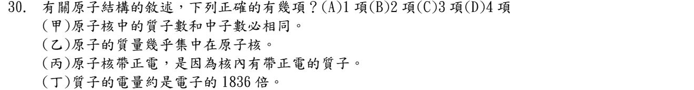
(甲) 質子數和中子數不一定相同（例如氫原子沒有中子、F 有 9 質子 10 中子）✗
(乙) 質子、中子都比電子重很多，原子的質量幾乎集中在原子核 ✓
(丙) 原子核裡有帶正電的質子，中子不帶電 → 原子核帶正電 ✓
(丁) 1836 倍是質子和電子的質量比；兩者的電量大小相同（一正一負）✗
正確 2 項 → (B)。
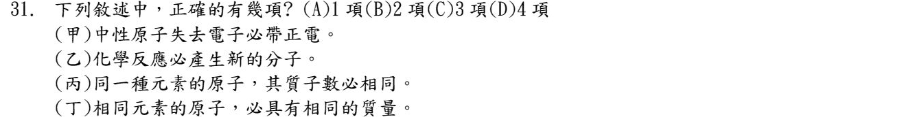
(甲) 中性原子失去電子 → 負電變少 → 帶正電 ✓
(乙) 化學反應會產生新物質，也就是新的分子 ✓
(丙) 質子數決定是哪一種元素，同一種元素的原子質子數必相同 ✓
(丁) 同一種元素可能有同位素（中子數不同），質量不一定相同 ✗
正確 3 項 → (C)。
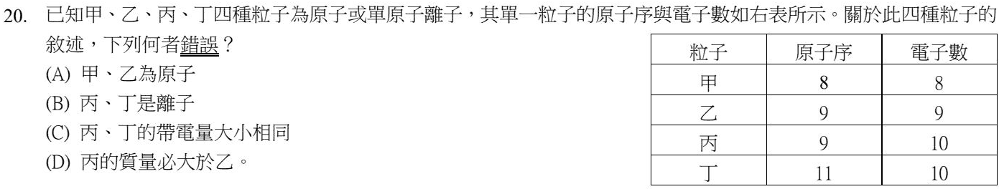
原子序 ＝ 質子數。比較質子數和電子數：
甲 8＝8、乙 9＝9 → 電子數和質子數相同，是原子（A ✓）
丙 9 個質子、10 個電子 → 多 1 個電子，帶 1 個負電；丁 11 個質子、10 個電子 → 少 1 個電子，帶 1 個正電 → 都是離子（B ✓），電量大小都是 1（C ✓）。
(D) 丙和乙質子數都是 9，是同一種元素，只差 1 個電子；電子非常輕，而且中子數表中沒有給，不能說丙的質量「必」大於乙 → 錯。
離子：原子得到電子帶負電、失去電子帶正電；質子數不會變。
▼ 南一類題（改寫）：同一個主題再練 6 題
| 粒子 | 甲 | 乙 | 丙 | 丁 |
|---|---|---|---|---|
| 質子數 | 6 | 6 | 7 | 8 |
| 中子數 | 6 | 7 | 7 | 8 |
| 電子數 | 6 | 6 | 7 | 10 |
甲、乙、丙、丁四種粒子的質子數、中子數、電子數如上表。下列敘述何者正確？
- (A) 甲和丙是同一種元素
- (B) 甲和乙互為同位素
- (C) 丁粒子不帶電
- (D) 乙的質量數是 6
判斷元素看質子數：甲、乙都是 6 個質子 → 同一種元素（碳），中子數 6、7 不同 → 同位素 → (B)。
(A) 甲 6 個質子、丙 7 個，不同元素 ✗
(C) 丁有 8 個質子（＋8）、10 個電子（−10），多了 2 個電子 → 帶負電 ✗
(D) 質量數 ＝ 質子 ＋ 中子 ＝ 6 ＋ 7 ＝ 13 ✗
核電廠燃料中的鈾原子可寫成 23892U。這個原子的中子數比質子數多幾個？
- (A) 54
- (B) 92
- (C) 146
- (D) 238
左下 92 ＝ 原子序 ＝ 質子數；左上 238 ＝ 質量數 ＝ 質子 ＋ 中子。
中子數 ＝ 238 − 92 ＝ 146；中子比質子多 146 − 92 ＝ 54 → (A)。
陷阱：(C) 146 是中子數，題目問的是「多幾個」，要再減一次。
關於原子結構，下列敘述何者正確？
- (A) 原子核帶負電
- (B) 原子的質量幾乎都集中在原子核
- (C) 電子的質量和質子差不多
- (D) 中子帶正電
質子、中子都在原子核裡，而且都比電子重很多（約 1836 倍）→ 原子的質量幾乎都在原子核 → (B)。
(A) 原子核裡有帶正電的質子，原子核帶正電 ✗
(C) 電子只有質子的約 1/1836 ✗
(D) 中子不帶電 ✗
碳有三種原子：碳-12、碳-13、碳-14（數字是質量數）。關於這三種原子的比較，何者錯誤？
- (A) 都是碳元素
- (B) 質子數都是 6
- (C) 中子數依序是 6、7、8
- (D) 電子數依序是 6、7、8
同一種元素，質子數相同（碳＝6）；原子是電中性，所以電子數也都是 6 → (D) 錯。
不同的只有中子數：12 − 6 ＝ 6、13 − 6 ＝ 7、14 − 6 ＝ 8 → (C) ✓。它們互為同位素。
某元素 X 和氧結合成 XO2。一個 XO2 分子共有 22 個電子；已知氧的原子序是 8。X 是下列哪一個元素？
- (A) 碳（原子序 6）
- (B) 氮（原子序 7）
- (C) 硫（原子序 16）
- (D) 矽（原子序 14）
原子電中性：電子數 ＝ 質子數 ＝ 原子序。兩個氧原子有 8 × 2 ＝ 16 個電子。
X 的電子數 ＝ 22 − 16 ＝ 6 → 原子序 6 → 碳，XO2 就是 CO2 → (A)。
某原子的原子序是 11、質量數是 23。這個原子的中子數是多少？
- (A) 11
- (B) 12
- (C) 23
- (D) 34
中子數 ＝ 質量數 − 質子數 ＝ 23 − 11 ＝ 12 → (B)。
(A) 11 是質子數（也是電子數）。(C) 23 是質量數。(D) 34 是把兩個數字相加，方向錯了。
第 6 章 ⑥ 分子：表現物質性質的最小粒子（6-4）12 題
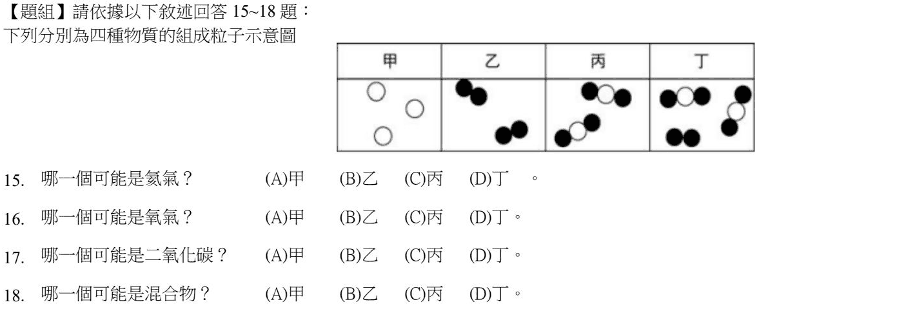
氦是鈍氣，以單一原子的形式存在 → 每個粒子只有一顆球 → 甲 (A)。
氧氣是 O2：兩個相同的原子結合成一個分子 → 乙（每個都是兩顆黑球）(B)。
二氧化碳 CO2：一個碳原子夾在兩個氧原子中間，三顆球、兩種原子，而且容器裡每個分子都一樣 → 丙 (C)。
混合物：容器裡有兩種以上不同的分子。丁裡面同時有「●○●」和「●●」兩種分子 → (D)。
判斷法：先看容器裡的分子長得都一樣嗎（一樣＝純物質）；再看每個分子裡的球是不是同一種顏色（同一種＝元素）。
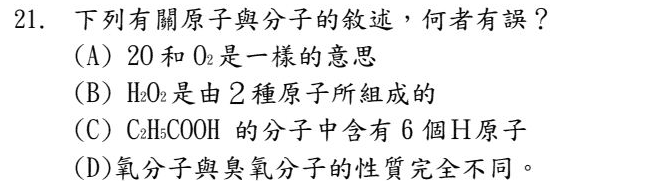
(A) 2O 是「兩個分開的氧原子」；O2 是「一個氧分子（由兩個氧原子結合）」，意思不一樣 → 錯 ✓
(B) H2O2 由 H、O 兩種原子組成 ✓
(C) C2H5COOH 的 H：5 ＋ 1 ＝ 6 個 ✓
(D) 氧氣（O2）和臭氧（O3）是不同的分子，性質不同 ✓
前面的大數字是「幾個粒子」；右下角的小數字是「一個分子裡有幾個原子」。
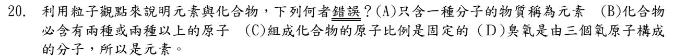
(A) 只含一種分子的物質是純物質，不一定是元素——水只含水分子，卻是化合物 → 錯 ✓。應該說：分子裡只含一種原子的才是元素。
(B) 化合物至少含兩種原子 ✓ (C) 化合物的組成比例固定 ✓ (D) 臭氧 O3 只含氧原子，是元素 ✓
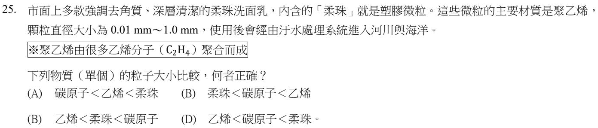
比較三者的大小：
碳原子：一個原子，大約 0.0000001 mm（10−7 mm）的等級。
乙烯分子 C2H4：由 2 個碳原子和 4 個氫原子組成 → 比一個碳原子大。
柔珠：0.01～1.0 mm，由非常多的乙烯聚合而成 → 三者中最大。
所以 碳原子 ＜ 乙烯 ＜ 柔珠，是選項 (A) 的順序。
⚠️ 補充：照上面的比較，答案應該是 (A)；而且這一題卷面上的選項代號印成 (A)(B)(B)(D)（第三個印錯），可能因此造成答案混亂。本題官方答案是 (B)，這裡照官方答案計分；如果考試遇到類似題目，請問老師這一題怎麼算。
▼ 南一類題（改寫）：同一個主題再練 5 題
下列哪一項敘述不符合目前的粒子觀點？
- (A) 化合物至少含有兩種原子
- (B) 能表現純物質化學性質的最小粒子是原子
- (C) 氧氣由兩個氧原子組成，但只含一種元素，所以是元素
- (D) 氦氣是以單一原子的形式存在
能表現純物質性質的最小粒子是分子（亞佛加厥提出）→ (B) 不符合。
例如水的性質要由「水分子」表現；把水分子拆成氫原子、氧原子，就不是水了。
(A) ✓ (C) 判斷元素看原子種類，不是看原子個數 ✓ (D) 鈍氣是單原子分子 ✓
下列哪一種物質是由「單原子」直接組成的？
- (A) 氖氣
- (B) 氮氣
- (C) 臭氧
- (D) 水
氖是鈍氣，很安定，一個原子就單獨存在 → (A)。
(B) 氮氣 N2（2 個原子）(C) 臭氧 O3（3 個原子）(D) 水 H2O（3 個原子）✗
如果用 ○ 代表氫原子、● 代表氧原子，下列哪一個模型可以代表一個過氧化氫分子（H2O2）？
- (A) ○●○
- (B) ○●●○
- (C) ●●
- (D) ○○
H2O2：2 個氫原子、2 個氧原子，共 4 個原子 → ○●●○ (B)。
(A) ○●○ 是水 H2O。(C) ●● 是氧氣 O2。(D) ○○ 是氫氣 H2。
下列哪一組物質，都是由分子組成的元素？
- (A) 氧氣、氮氣
- (B) 水、二氧化碳
- (C) 鐵、銅
- (D) 食鹽水、空氣
氧氣 O2、氮氣 N2：只有一種原子 → 元素；而且是兩個原子結合成分子 → (A)。
(B) 水、二氧化碳是化合物 ✗
(C) 鐵、銅是元素，但金屬是許多原子堆積而成，沒有單獨的分子 ✗
(D) 都是混合物 ✗
一個乙醇（酒精）分子 C2H5OH 中，一共有幾個原子？
- (A) 3
- (B) 6
- (C) 9
- (D) 8
把每個元素符號右下角的數字加起來（沒寫就是 1）：C 2 個 ＋ H 5 個 ＋ O 1 個 ＋ H 1 個 ＝ 9 → (C)。
(A) 3 是「原子的種類」（C、H、O）。題目問個數還是種類，要看清楚。後面那個 H 也別漏算。
第 6 章 ⑦ 化學式的寫法與讀法（6-4）20 題
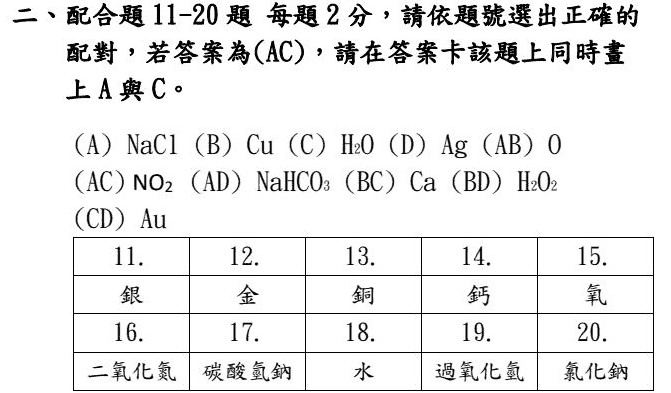
配合題：每題從上面 10 個代碼選一個。原卷要求答案為兩個字母時在答案卡畫兩格，這裡直接點那個代碼（例如 AC）即可。
銀的元素符號是 Ag → (D)。
Ag 是銀、Au 是金，最容易對調。
金的元素符號是 Au → (CD)。
銅的元素符號是 Cu → (B)。
鈣的元素符號是 Ca → (BC)。
氧的元素符號是 O → (AB)。
二氧化氮：1 個氮、2 個氧，氧寫在後面 → NO2 (AC)。
碳酸氫鈉（小蘇打）是 NaHCO3 → (AD)。
水是 H2O → (C)。
過氧化氫（雙氧水）是 H2O2 → (BD)。
H2O 和 H2O2 只差一個氧，但是完全不同的物質。
氯化鈉（食鹽）是 NaCl：金屬鈉在前、氯在後 → (A)。
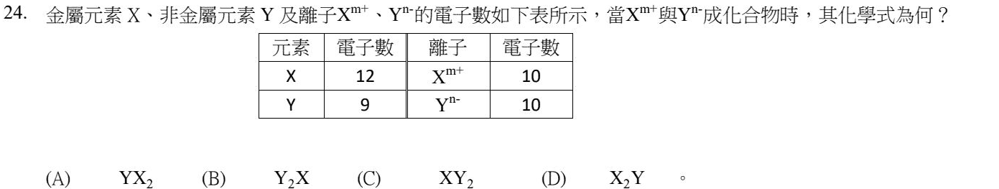
X 有 12 個電子 → 原子序 12 → 鎂；變成離子後剩 10 個電子 → 失去 2 個 → X2+（m ＝ 2）。
Y 有 9 個電子 → 原子序 9 → 氟；變成離子後有 10 個 → 得到 1 個 → Y−（n ＝ 1）。
化合物要電中性：1 個 X2+ 要配 2 個 Y− → 金屬寫前面 → XY2（就是 MgF2）→ (C)。
(A)(B) 非金屬寫在前面，順序錯 ✗ (D) X2Y 比例反了 ✗
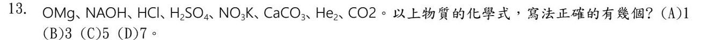
逐個檢查：
OMg ✗（金屬在前、氧在後：MgO）
NAOH ✗（鈉是 Na，第二個字母要小寫：NaOH）
HCl ✓
H2SO4 ✓
NO3K ✗（金屬在前：KNO3）
CaCO3 ✓
He2 ✗（氦是單原子分子：He）
CO2 ✗（2 要寫成右下角的小字：CO2）
正確的有 3 個 → (B)。
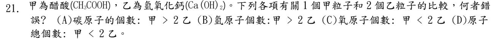
先數原子：
1 個甲 CH3COOH：C 2、H 4、O 2，共 8 個原子。
2 個乙 Ca(OH)2：每個 Ca 1、O 2、H 2；兩個 → Ca 2、O 4、H 4，共 10 個原子。
(A) 碳：2 ＞ 0 ✓
(B) 氫：4 和 4 一樣多，不是「甲 ＞ 2 乙」→ 錯 ✓
(C) 氧：2 ＜ 4 ✓
(D) 總數：8 ＜ 10 ✓
醋酸的 H 要把 CH3 的 3 個和 COOH 的 1 個加起來；括號外的 2 要乘進括號裡。
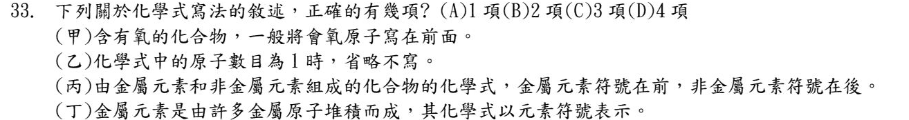
(甲) 含氧的化合物，氧原子一般寫在後面（例如 CO2、MgO）✗
(乙) 原子數目是 1 時不寫（例如 NaCl）✓
(丙) 金屬在前、非金屬在後 ✓
(丁) 金屬由許多原子堆積而成，沒有獨立的分子，化學式直接用元素符號（例如 Fe、Cu）✓
正確 3 項 → (C)。
▼ 南一類題（改寫）：同一個主題再練 6 題
蔗糖的化學式是 C12H22O11。下列敘述何者錯誤？
- (A) 蔗糖屬於化合物
- (B) 蔗糖由 3 種元素組成
- (C) 每個蔗糖分子含有 11 個氧分子
- (D) 每個蔗糖分子共有 45 個原子
蔗糖分子裡的是 11 個氧原子，不是「氧分子」（O2）→ (C) 錯。
(A) 含 C、H、O 三種元素 → 化合物 ✓ (B) ✓ (D) 12 ＋ 22 ＋ 11 ＝ 45 ✓
「分子裡含有 X 原子」✓；「分子裡含有 X 分子」✗——分子裡面不會再裝著別的分子。
依照化學式的命名規則，「五氧化二磷」的化學式應為下列何者？（磷的元素符號是 P）
- (A) P2O5
- (B) O5P2
- (C) 5OP2
- (D) P5O2
中文名稱由後往前讀成符號：「五氧化二磷」→ 2 個磷、5 個氧；氧化物的氧寫在後面 → P2O5 (A)。
(B) 氧寫在前面 ✗ (C) 個數要寫在右下角，不是前面 ✗ (D) 數字對調了 ✗
下列化學式的寫法，何者正確？
- (A) 氯化鎂 MgCl2
- (B) 氧化鈣 OCa
- (C) 氫氧化鈣 CaOH2
- (D) 氯化鈉 ClNa
(A) 金屬（Mg）在前、非金屬（Cl）在後 ✓
(B) 氧化物的氧寫後面，應為 CaO ✗
(C) 原子團 OH 有兩個時要加括號：Ca(OH)2 ✗
(D) 金屬在前，應為 NaCl ✗
從硫酸的化學式 H2SO4 可知，硫酸分子中氫原子和氧原子的數目比為何？
- (A) 1：2
- (B) 2：1
- (C) 1：1
- (D) 1：4
氫 2 個、氧 4 個 → 2：4 ＝ 1：2 → (A)。
(B) 比例倒過來了。(D) 1：4 是硫和氧的比。
鋁和氧化合成氧化鋁時，鋁原子和氧原子的數目比是 2：3。氧化鋁的化學式應為何？
- (A) Al2O3
- (B) Al3O2
- (C) O3Al2
- (D) AlO
鋁 2、氧 3；金屬寫前面、氧寫後面 → Al2O3 (A)。
(B) 數字對調 ✗ (C) 氧寫在前面 ✗ (D) 比例變成 1：1 ✗
一個氫氧化鎂 Mg(OH)2 中，一共有幾個原子？
- (A) 3
- (B) 4
- (C) 5
- (D) 6
括號外的 2 要乘到括號裡的每一個原子：Mg 1 個 ＋ O 2 個 ＋ H 2 個 ＝ 5 → (C)。
常見錯誤：(B) 4 是忘了括號外的 2 只乘給 H；(A) 3 是只數了 Mg、O、H 三種。
第 6 章 ⑧ 同素異形體與化學變化中的原子（6-4）11 題
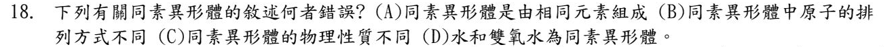
同素異形體：由同一種元素組成、但原子排列方式不同的物質（例如石墨和鑽石、氧氣和臭氧）。
(D) 水 H2O 和雙氧水 H2O2 都含氫、氧兩種元素，是兩種不同的化合物，不是同素異形體 → 錯 ✓
(A)(B)(C) 都是同素異形體的正確描述。
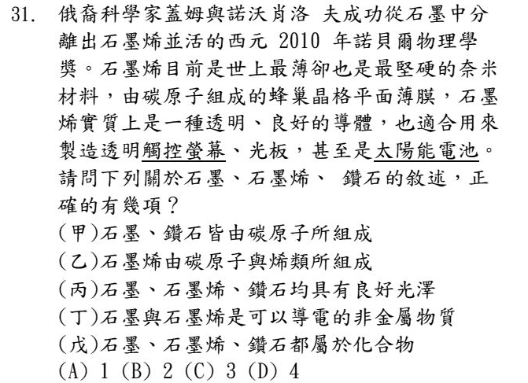
(甲) 石墨、鑽石都只由碳原子組成 ✓
(乙) 石墨烯只由碳原子組成，「烯」是名稱，不是另一種成分 ✗
(丙) 文章說石墨烯是透明的；鑽石雖然閃亮，但三者並不都「具有良好光澤」 ✗
(丁) 石墨、石墨烯都能導電，而且是非金屬 ✓
(戊) 三者都只含碳一種元素 → 是元素（互為同素異形體），不是化合物 ✗
正確 2 項 → (B)。
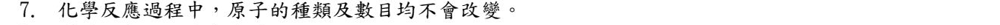
化學反應只是原子重新排列組合，原子的種類和數目都不會改變（這也是質量守恆的原因）→ 是。
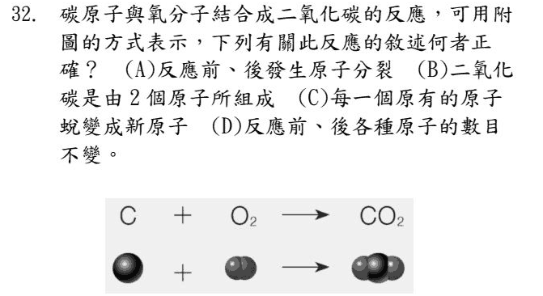
看圖：C ＋ O2 → CO2。反應前 1 個碳、2 個氧；反應後還是 1 個碳、2 個氧——原子只是重新組合。
(A) 原子沒有分裂 ✗
(B) 二氧化碳分子由 3 個原子（1 碳 2 氧）組成，2 種是「種類」✗
(C) 原子不會變成新原子 ✗
(D) 各種原子的數目不變 ✓
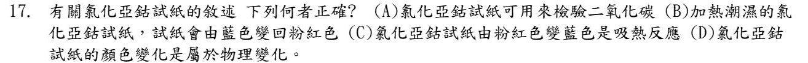
氯化亞鈷試紙：乾燥時藍色，吸了水變粉紅色，用來檢驗水。
(A) 不是檢驗二氧化碳（檢驗二氧化碳用澄清石灰水）✗
(B) 加熱潮溼的試紙，水被趕走，會由粉紅色變回藍色，方向說反了 ✗
(C) 粉紅色變藍色要加熱，是吸熱反應 ✓
(D) 變色時產生了新的物質（含水與不含水的氯化亞鈷），是化學變化 ✗
▼ 南一類題（改寫）：同一個主題再練 6 題
下列哪一組物質互為同素異形體？
- (A) 一氧化碳和二氧化碳
- (B) 氧氣和臭氧
- (C) 水和過氧化氫
- (D) 碳-12 和碳-14
同素異形體：同一種元素組成、但原子排列（或個數）不同的不同物質。氧氣 O2 和臭氧 O3 都只由氧組成 → (B)。
(A)(C) 含兩種元素，是不同的化合物 ✗
(D) 是同一元素的不同原子，叫做同位素 ✗
石墨和鑽石的比較，下列何者錯誤？
- (A) 兩者都只由碳原子組成
- (B) 兩者碳原子的排列方式不同
- (C) 石墨可以導電
- (D) 兩者的物理性質相同
原子排列不同 → 性質差很多：鑽石最硬、透明、不導電；石墨軟、黑色、可導電 → (D) 錯。
(A)(B)(C) 都正確。
依序填入空格最恰當的是：「碳-12 和碳-14 互為（ ）；鑽石和 C60（足球烯）互為（ ）。」
- (A) 同位素；同素異形體
- (B) 同素異形體；同位素
- (C) 同位素；同位素
- (D) 同素異形體；同素異形體
碳-12、碳-14 是碳的兩種原子（中子數不同）→ 同位素。
鑽石、C60 是碳組成的兩種物質（排列不同）→ 同素異形體 → (A)。
分辨：同位素講「原子」（在週期表同一個位置）；同素異形體講「物質」（外形、結構不同）。
下列哪一個變化屬於物理變化？
- (A) 鐵釘生鏽
- (B) 木炭燃燒
- (C) 冰塊融化成水
- (D) 水通電分解
冰融化只是狀態改變，還是水分子，沒有產生新物質 → 物理變化 (C)。
(A) 生成氧化鐵（鐵鏽）(B) 生成二氧化碳 (D) 生成氫氣和氧氣——三個都有新物質，是化學變化 ✗
氫氣燃燒生成水：2H2 ＋ O2 → 2H2O。反應前後，下列何者不會改變？
- (A) 分子的種類
- (B) 分子的總數
- (C) 原子的種類和數目
- (D) 物質的性質
化學反應只是原子重新排列組合：反應前 H 4 個、O 2 個；反應後還是 H 4 個、O 2 個 → (C)。
(A) 氫分子、氧分子變成水分子 ✗
(B) 分子數 2 ＋ 1 ＝ 3 個變成 2 個 ✗
(D) 水和氫氣、氧氣的性質完全不同 ✗
乾燥的氯化亞鈷試紙是藍色，碰到水會變成粉紅色。關於這個變色，下列何者正確？
- (A) 是物理變化，可用來檢驗二氧化碳
- (B) 是化學變化，可用來檢驗水
- (C) 是物理變化，可用來檢驗水
- (D) 是化學變化，可用來檢驗氧氣
氯化亞鈷和水結合，變成另一種含水的物質（顏色也變了）→ 有新物質產生，是化學變化；最常用來檢驗水 → (B)。
(A)(C) 不是物理變化 ✗ (A)(D) 檢驗的不是二氧化碳、氧氣 ✗
反過來：把粉紅色的試紙加熱烘乾，會變回藍色（這個方向要吸熱）。